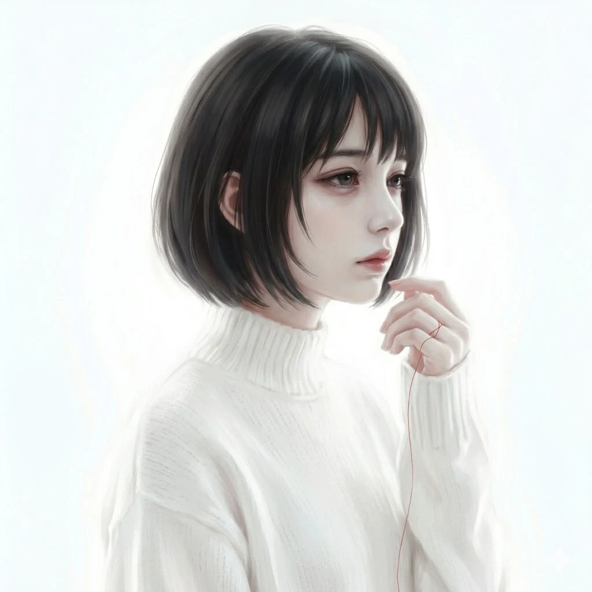
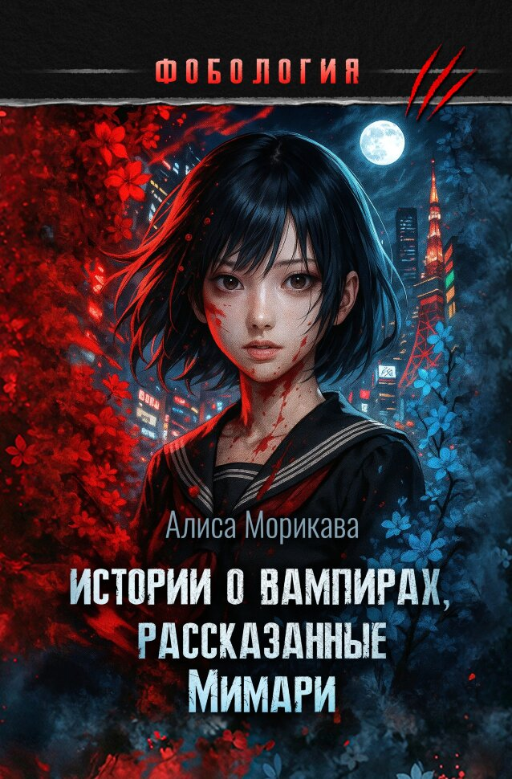

Фрагмент

beatus vir qui suffert tentationem
Октябрь, 2012
Мимари уже видела этого старика, - нет, пожилого представительного господина, - на своих концертах. Обычно он занимал VIP-ложу, вокруг стояли длинные, одинаковые на лицо охранники в тёмно-синих костюмах, обманчиво спокойные, но готовые застрелить любого, кто подойдёт хотя бы на пару метров ближе дозволенного.
Его звали господин Жерар, именно так представила человека, выглядящего как типичный толстосум, концертный менеджер Кавамата Нанами. Она заявилась в гримёрку, когда Мимари оправляла костюм - короткое трапециевидное платье чёрного цвета, сидящее на ней, как вторая кожа, - неприлично румяная и счастливая от осознания того, какой видный господин решил почтить своим присутствием их концерт. Не то чтобы Мимари была непопулярна: последние несколько лет её карьера семимильными шагами пошла в гору, и она даже заключила выгодный контракт с Sony Music, успела засветиться на обложке AneCam и 25ans [1], но для звёзд первого эшелона ей было ещё далеко. Покровительство - тайное или явное - какого-нибудь поклонника с толстым кошельком и связями могло бы закинуть Мимари на музыкальный Олимп. Мнения Мимари на этот счёт никто не спрашивал, да и кому пришло бы в голову интересоваться этим у товара? Мимари не обольщалась на свой счёт: да, симпатичное личико, голос чуть лучше среднего, но всё, что она имела на данный момент, было результатом труда целого концерна специалистов, которых ей предоставило агентство. Разумеется, не бесплатно. Им нужно было отбить денежки, как можно скорее, и поиметь с неё ещё больше, пока она представляла для публики какой-то интерес.
Это сделка с дьяволом, которого ты сам выбираешь. Глупо отказываться, лицемерно размышляя о гордости и морали, когда эти люди буквально делают из тебя Бога. Да, это, возможно, кратковременно, и на вершине ты можешь пробыть пару лет, если повезёт, - выскочишь замуж по истечении контракта за богатенького спонсора, который заметит именно тебя. Красивая сказка для дурочек. Нет, Мимари не обольщалась, она знала, на что идёт, и, если ради славы нужно было продать душу дьяволу, она бы сделала это не задумываясь.
Ради известности она торчала в танцевальном зале, приходя туда, едва Токио, отдохнувший мгновение после бурной ночи, снова начинал гудеть как осиный улей и уходя далеко за полночь.
Для этого она занималась у французского педагога по вокалу, славящегося вздорным нравом, колотящего её палкой всякий раз, когда она не дотягивала до одному ему постижимого идеала. Культура отмены? Ха! Мимари знала, что он - лучший, а значит, надо терпеть, сжимая зубы, не проронив ни слова, пока жёсткая палка вновь и вновь опускалась на позвоночник. Главное, она видела - и все видели - отличный результат, а значит, француз отрабатывал свои деньги и мучения Мимари.
Для этого она стоически сносила бесконечные придирки агентства, тяжёлый грим, съедающий все краски некогда её цветущего лица, сумасшедших фанатов, пытающихся разорвать её, если охрана вдруг заснёт. Такое было уже несколько раз; в последний Мимари получила длинную царапину, расцветшую на её белой коже от ногтей какой-то девчонки, пытающейся ухватиться за руку, когда Мимари проходила по коридору, спеша юркнуть в лимузин после концерта.
«Это цена славы», — сказала Кавамата Нанами, ухмыльнувшись. Царапина саднила и ныла, и Мимари даже выругалась сквозь зубы, обрабатывая кожу антисептиком. Потом она ещё получила нагоняй от агентства, потому что гримёрше пришлось маскировать ранку. Никто не должен был видеть несовершенств, тёмных кругов под глазами, расчесов, которые ежедневно оставляла у себя Мимари в попытках справиться со напряжением. Она старалась не расчёсывать видимые места, но иногда всё выходило из-под контроля, и она надевала плотные колготки, лишь бы никто не увидел кровавые раны, оставленные на ногах её ногтями.
Она делала всё это для того, чтобы снова не становиться Такано Наоми, девочкой-поющей-в-клубе, Наоми-достаточно-глупой-чтобы-не-сдать-экзамены-в-Тодай [2], Наоми-разочарованием-семьи.
Та, прошлая жизнь осталась в Санъя*[3], и Такано Наоми умерла, получив отказ из Тодая, стоя босыми ногами на сквозняке, который вечно устраивала семья. Тогда же умер и отец, отсыпавшийся после ночной смены в магазине, и младший братишка, не успевший вернуться из школы.
Тогда все умерли, сразу, в одно мгновение, разделив жизнь Такано Наоми на идеальную половину до и после, будто мясник коровью тушу. На одной части весов кусок жизни до 18 лет, надежда и опора отца, лучшая сестрёнка, носящая своего непутёвого братца на плечах, если тот устанет. Накормит рисом и заберёт от рук уснувшего отца пульт от телевизора и банку пива. На другой части — чёрное бесформенное нечто, кокон из несбывшихся мечт и чаяний. Насмешки звучат в ушах, грязная вода стекает за шиворот.
«Такано — шлюха».
«Такано даёт за еду».
«Такано уродка!»
«Такано бесполезное дерьмо»
Надписи в школьном туалете расплываются в глазах, выцветают в белизну, а потом следует удар в живот, и вот она уже лежит на земле, захлёбываясь криком. В воздухе мелькают девичьи ноги, обутые в белоснежные кроссовки, и кровь разлетается на них алыми брызгами, живот тянет, и Такано Наоми кажется, что сейчас она задохнётся.
Скорей бы она задохнулась.
Тодай был мечтой, воздушным замком, войдя в который она бы доказала им всем, чего заслуживает. Вчерашние мучители валялись в ногах, умоляя её, работавшую в какой-нибудь известной компании, взять на работу по старой дружбе, и она бы, конечно, всем им отказала. Вообще-то, Мимари даже мечтала о том, как они выпрыгивают из окна, узнав, что их не приняли на работу. Она бы не стала их останавливать.
Но Тодай так и остался недостижимой мечтой, и из чёрного кокона появилась Мими, девушка без прошлого, с окрашенными в рыжий волосами, выступающая в клубах Синдзюзку. У Мими была хорошенькая мордашка и чудесный невинный голос, и уставшие саларимэны[4], заходящие в пабы, чтобы пропустить после работы, встретили её с радостью. На отложенные деньги с выступлений Мими сделала себе пару пластических операций, убирая широковатый нос с горбинкой, принадлежащий Такано Наоми, и превратилась из гусеницы в бабочку. Тогда же, в одном из клубов её заметил менеджер агентства, и Мими стала Мимари. Излучающая молодость, с лисьими глазами и звонким голосом, она смогла добиться, чтобы агентство начало вливать денежки в её финансирование. Мимари знала, что хотела славы, а дальнейшее её не интересовало.
Мимари прокричала последние слова недавнего хита, свет белым фонтаном брызнул со сцены, вымарывая лица зрителей, оставляя её сначала в оглушительной тишине, которая поглотила эхо слов, но затем, через секунду, безмолвие взорвалось неистовыми криками толпы. Мимари стояла, ослеплённая, оглоушенная, наблюдая, будто в замедленной съёмке, со всех сторон в неё летят
камни и комья грязи
мягкие игрушки и цветы. Одна игрушка, кофейного цвета медвежонок, приземлился прямо возле ног, обутых в красные туфельки, и первым желанием было отскочить, взвизгнуть. Мимари схватила медвежонка за лапу, вытянула его вверх и ослепительно улыбнулась толпе. Из зала накатывала энергия, вырабатываемая сотнями возбуждённых тел, настоящее цунами, состоящее из эмоций и переживаний. В первый раз Мимари даже оступилась, настолько это было мощное чувство, будто тебя со всех сторон охватывает вода и тянет в глубину, чтобы ровно через секунду, твоя голова снова оказалась на поверхности, хватая ртом спасительный воздух.
Мимари сделала лёгкий поклон, благодаря своих зрителей, и тёмно-алый занавес опустился, возвращая глазам зрение. Лампы тоже погасли, оставляя за собой хаотичные пятна света. Мгновение полной пустоты, мгновение, когда Мимари чувствовала себя биороботом, которому отключили питание, потому что он исполнил все команды. Но это длилось какую-то секунду, и в следующий миг её тянет за руку менеджер, уводя от сцены, от места, где Мимари чувствует себя наполненной смыслом.
— Тебе нужно поболтать с господином Жераром, он ждёт, - говорит ей Кавамата Нанами, придирчиво оглядывая, не смазался ли макияж, не вспотела ли кожа. Лёгкими движениями пуховки пудры гримёр удаляет все несовершенства, появившиеся за концерт. Мимари случайно вдыхает сухие частицы и закашливается, менеджер недовольно кривит бровь.
— Помни, это твой шанс.
Шанс на лучшую жизнь.
Её ведут бесконечными коридорами, куда-то по лабиринтам огромного мюзик-холла, и она боковым зрением видит свои отражения в зеркалах: пустые глаза, короткое чёрное платье, вновь идеальная укладка. Стук каблуков её красных туфель гулко отдаётся в огромных помещениях. Наконец, перед ней распахивают тёмно-бордовые двери VIP-комнаты. Здесь даже запах другой, запах дерева, выкуренных сигар и настоящей кожи. В комнате полумрак, только горит пара светильников, своим сиянием напоминающих лунный шар. Мимари остаётся один на один с человеком, сидящим перед ней на дорогом кожаном диване.
Сейчас она имеет возможность его разглядеть как следует. Не пялиться, это невежливо, да и создаст плохое впечатление. Мимари легонько кланяется, скользя по мужчине взглядом. Когда-то он следил за собой, но старость берёт своё: одутловатостью, которую не скроет отлично пошитый костюм благородного серовато-синего цвета; серебром в когда-то чёрных волосах; особенным ароматом. От него пахло чем-то медицинским, сладковатым, и этот запах забивал ноздри. Мимари с удивлением ощутила, что её сейчас может вывернуть наизнанку. Старик — господин Жерар — ответил ей кивком головы, и жестом указал на кожаное кресло напротив. Мимари села, стараясь проглотить мерзкий ком, вставший в горле. Губы старика, полные, неприлично красные, будто весь цвет его организма ушёл в эту окраску, растянулись в подобострастной улыбке.
— Вина, мисс? Какое вы предпочитаете? - заговорил он неожиданно приятным, обволакивающим, точно бархат голосом.
— Мне в..всё равно, - быстро ответила Мимари, нервно сглотнув. Господин Жерар с каждой минутой нравился ей всё меньше, было в нём что-то отвратительно отталкивающее, будто... будто на нечто бесформенное и жуткое натянули человеческую кожу и мясо, нарядили в дорогой костюм. Старик разлил багровую жидкость по бокалам, стоящим на столике, и приглашающе указал рукой, одетой в перчатку.
Мимари, поборов желание выпить бокал залпом, пригубила вино. Глотку обожгла терпко-кисловатая жидкость. Мимари терпеть не могла алкоголь, но ей частенько приходилось выпивать с менеджерами агентства. Потом она бежала в туалет, нажимала на корень языка и блевала, чувствуя, как очищается. Это было прекрасное чувство.
— Привёз из Франции, собственная винодельня.
Непонятно было, хвастается ли этим фактом господин Жерар или просто констатирует, но Мимари на всякий случай улыбнулась, показывая идеально белые, небольшие зубки.
— Рада наконец-то познакомиться с вами, господин Жерар. Давно уже заметила вас на своих выступлениях, - Мимари старалась говорить дружелюбно, не обращая внимания на холодок, бегущий по спине. Будто что-то далёкое, древнее, чем инстинкт, кричало ей об опасности.
Глаза господина Жерара скользнули по её лицу, и Мимари с ужасом увидела, что они напоминают глаза мёртвой рыбы на Цукидзи-седзё[5], такие же безразличные, мутные, как стеклянные шарики. И свет в них отражался также, как в стеклянных шариках, неестественно. Мимари почувствовала, как её затягивает в тёмную муть. Господин Жерар провёл языком по губам, и это движение вывело Мимари из транса, отвращая своим неприличием.
— Я давно вас заметил, mon beau papillon [6]. Счастье — наблюдать, как из неуклюжей клубной певички, развлекающей грязных работяг, вдруг выросла такая очаровательная и грациозная орхидея, как вы, мисс Мимари.
— Что? - не сдержавшись, ахнула Мимари, чувствуя, как леденеют внутренности. Господин Жерар перехватил её руку, и девушка поёжилась от холода прикосновений его пальцев. Старик держал её на удивление крепко, несмотря на свою рыхлую комплекцию.
— От...отпустите меня, прошу, - просипела Мимари. Глаза старика гипнотизировали ей, лишая сопротивления, заставляя чувствовать себя слабой и беспомощной. Заставляя мёртвую Такано Наоми возвращаться к жизни.
— О, прошу прощения. Я не хотел напугать вас, - жеманно улыбнулся господин Жерар, оглаживая пальцами её руку, однако его глаза оставались такими же мутными, будто дно колодца, куда никогда не проникает солнечный свет.
— Что вам от меня надо? - Мимари с ужасом услышала свой голос — маленькой, сломленной девочки, по ошибке попавшей в паутину к огромному пауку. Ей никак не удавалось вернуть контроль над разумом, возвратиться к прежней, холодной и пустой Мимари.
— Я хочу подарить вам вечную жизнь, моя дорогая, - господин Жерар вновь пригубил бокал вина, и Мимари тупо уставилась на него: не шутит? Да что, чёрт возьми, здесь происходит? Злость немного помогла прояснить голову.
— Прекратите это. Я вызову охрану.
Она блефовала. Да, у неё был надет на руку браслет, куда была вмонтирована кнопка тревоги, но менеджеры были в курсе, кто сидит в VIP-зале, и с Мимари могли сделать всё что угодно, и она бы не вышла из дорогущей проклятой комнаты, не приняв условий этого сумасшедшего. Таков договор с дьяволом. Такова плата за успех.
— Не бойся меня, моё дорогое дитя. Я предлагаю тебе самое ценное, что имею. Я знаю, что все эти жадные до денег идиоты обрадовались возможности подложить свою лучшую куклу под богатого гайдзина [7]. Он дурак, этот богатый старый гайдзин, так они думают. Хочет позабавиться с очередной певичкой.
Господин Жерар вновь улыбнулся, и Мимари увидела в тусклом свете лунных шаров, что зубы у него желтоватые и острые как бритвы. Она вскочила с кресла, совершенно забыв, что всем на неё наплевать, будет она кричать или колотить в дверь, пока не собьёт руки в кровь. Это существо, разложившееся на диване, не было человеком, и осознание сего факта ввергло Мимари в какую-то животную панику. Она не помнила, как оказалась у ручки двери, с силой дёрнула её на себя. Та жалобно звякнула, не выпуская пленницу. Жесткие, холодные пальцы вдавили Мимари в дверь, а потом развернули её лицом к комнате. Господин Жерар оказался гораздо выше нее, а в охваченном ужасом разуме Мимари он и вовсе выглядел высокой, почти под потолок, зловещей фигурой.
— Я наблюдал за тобой, Мимари, ещё с тех самых пор, как ты выступала в Синдзюку, смотрел, как эти пьяные оборванцы раздевали тебя взглядами. Но ты была не такой, как другие шлюхи, в тебе была какая-то искра, - старик, нет, чудовище, склонилось над ней, и его холодные пальцы сжали её горло. Мимари почувствовала, как задыхается
снова задыхается, и кровь идёт носом, и в животе тянет
и попыталась перехватить его руку, но её пальцы беспомощно загребли воздух.
Мимари почувствовала, как чудовище опаляет своим холодным смрадным дыханием её ухо. До ноздрей снова донёсся этот ужасный запах — медицинский, сладковато-приторный, а ещё запах древней кожи, пудры. Так пахнет смерть? Что-то склизкое коснулась уха, очерчивая контуры, и холодные пальцы всё сильнее сжимали её горло. Мир начал чернеть, и из глаз Мимари покатились слёзы. Её рот беспомощно раскрывался и закрывался, пытаясь поймать бесценные капли воздуха.
— Поэтому я предлагаю тебе то, за что другие платили бы миллионы. Вечную жизнь, которую ты разделишь со мной, став моей спутницей. Навсегда сохранишь свою юность, красоту и талант. Станешь настоящей Богиней.
Жёсткая хватка пальцев переместилась на плечо Мимари, и там что-то хрустнуло. От вновь сделанного глотка воздуха закружилась голова. Рот старика накрыл её шею, и Мимари с ужасом ощутила его жадные, непристойные ласки. Она почувствовала, как из желудка быстро поднимается наверх желчь, обжигая пищевод. А потом была боль — сначала острая, как вспышка, затем тупая, высасывающая жизнь. Мимари чувствовала, как чудовище делает глотки — медленные, глубокие, и перед глазами вновь появились чёрные точки, а в ушах что-то запищало. На смену боли пришла слабость, - сладкая до изнеможения. «Хватит бороться» - говорила она. – «Сдайся и плыви по волнам этой боли». Мимари слышала, как её сердце начало замедляться.
Сосущее ощущение внезапно прекратилось, и Мимари рухнула на пол, подвернув лодыжку. На удивление она не чувствовала боли. Сквозь пелену плывущего сознания она видела, как господин Жерар достал платок из кармана пиджака, вытер окровавленные губы и бросил что-то на стол.
—Моя визитка, моя милая Мимари. Даю тебе немного времени, чтобы всё решить. Я также предупрежу твоё агентство, так что не вздумай сбежать. Надеюсь, размышлять ты будешь недолго. Вечная слава, вечная жизнь…
Мимари потеряла сознание. Милосердная темнота приняла её в свои объятья, стирая ужасы последнего времени. Чьи-то руки взяли её и куда-то понесли, и это было так хорошо, как в детстве. Папа также носил её на руках, когда она засыпала с книгой на диване.
Отец
Отец
Где ты, папочка?..
